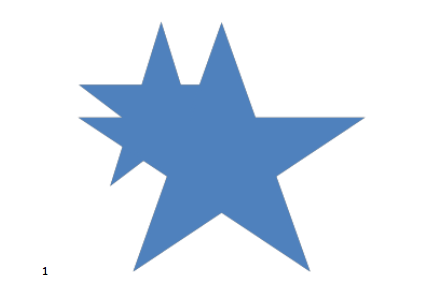
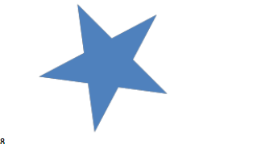
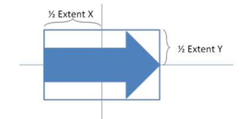

DrawingML中的所有媒体对象都存储在一个图片形状中。这个图片形状使用一个 blipFill 元素来显示媒体对象。如果是音频的情况下，使用的是图标；在视频情况下，使用的是一个一帧来显示。
简单例子
<p:pic>
<p:nvPicPr> ...</p:nvPicPr>
<p:blipFill>
<a:blip r:embed="rId4" r:link="" /> <a:stretch>
<a:fillRect />
</a:stretch>
</p:blipFill>
<p:spPr> ... </p:spPr>
</p:pic>
|
blipFill元素用来引用图片文件，因为引用的是这个文件包内的文件，所以使用了一个 关联ID（relationship ID）。
图片
DrawingML 文件格式被分解为下面的三个部分：
下面一个一个的来看这个。
指定基本图片
图片通过 pic 元素插入文档中，这与 shape 元素类似，但有一些关键的不同，这些关键的不同使图片信息保存得更加完整。基本的图片会包含一个 blipfill 元素和一些基本的 non-visual（不可见）属性 。
<p:pic>
<p:nvPicPr>
<p:cNvPr id="4" name="St_Patrick's_Day.jpg"/> <p:cNvPicPr>
<a:picLocks noChangeAspect="1"/> </p:cNvPicPr>
<p:nvPr/>
</p:nvPicPr>
<p:blipFill>
<a:blip r:embed="rId2"/>
<a:stretch>
<a:fillRect/>
</a:stretch>
</p:blipFill>
<p:spPr>
<a:xfrm>
<a:off x="1346200" y="914400"/> <a:ext cx="3657600" cy="2743200"/>
</a:xfrm>
<a:prstGeom prst="rect">
<a:avLst/>
</a:prstGeom>
<a:noFill/>
<a:ln>
<a:noFill/>
</a:ln>
</p:spPr>
</p:pic>
|
给图片指定属性
现在基本的图片已经指定了，我们可以可以把注意力转移到更复杂的属性上面，比如重新着色，图片描述等。下面的例子中，把 绿色 转变成了紫色。这可以通过 duotone 元素来实现，这个元素允许两个基本的颜色来重新着色整个图片。一个用于在图片的暗色部分，一个用于图片的亮色部分。
<p:pic>
<p:nvPicPr>
<p:cNvPr id="4" name="St_Patrick's_Day.jpg" descr="This is a Saint Patrick's day picture"/>
<p:cNvPicPr>
<a:picLocks noChangeAspect="1"/>
</p:cNvPicPr>
<p:nvPr/>
</p:nvPicPr>
<p:blipFill>
<a:blip r:embed="rId2">
<a:duotone>
<a:srgbClr val="000000"/>
<a:schemeClr val="accent4"/> </a:duotone>
</a:blip>
<a:stretch>
<a:fillRect/>
</a:stretch>
</p:blipFill>
<p:spPr>
<a:xfrm>
<a:off x="1346200" y="914400"/>
<a:ext cx="3657600" cy="2743200"/> </a:xfrm>
<a:prstGeom prst="rect">
<a:avLst/>
</a:prstGeom>
<a:noFill/>
<a:ln>
<a:noFill/>
</a:ln>
</p:spPr>
</p:pic>
|
转换图片
现在，基本属性和附加属性都已经指定了，现在我们可以配合形状属性来使用了。下面的例子用同一张图片，加上了3D视角，一个简单的阴影，一个边框。这些形状属性可以同样使用到shape元素。一个图片特定的不同就是，边框。形状的边框只会向外，而图片是内外都会扩张。
<p:pic>
<p:nvPicPr>
<p:cNvPr id="4" name="St_Patrick's_Day.jpg" descr="This is a Saint Patrick's day picture"/>
<p:cNvPicPr>
<a:picLocks noChangeAspect="1"/>
</p:cNvPicPr>
<p:nvPr/>
</p:nvPicPr>
<p:blipFill>
<a:blip r:embed="rId2">
<a:duotone>
<a:srgbClr val="000000"/> <a:schemeClr val="accent4"/>
</a:duotone>
</a:blip>
<a:stretch>
<a:fillRect/>
</a:stretch>
</p:blipFill>
<p:spPr>
<a:xfrm>
<a:off x="1346200" y="914400"/> <a:ext cx="3657600" cy="2743200"/>
</a:xfrm>
<a:prstGeom prst="rect">
<a:avLst/>
</a:prstGeom>
<a:noFill/>
<a:ln w="57150">
<a:solidFill>
<a:schemeClr val="bg1"/>
</a:solidFill>
</a:ln>
<a:effectLst>
<a:outerShdw blurRad="50800" dist="50800" dir="2700000" algn="tl" rotWithShape="0">
<a:srgbClr val="7D7D7D">
<a:alpha val="65000"/>
</a:srgbClr>
</a:outerShdw>
</a:effectLst>
<a:scene3d>
<a:camera prst="perspectiveRelaxedModerately"/> <a:lightRig rig="threePt" dir="t">
<a:rot lat="0" lon="0" rev="18900000"/> </a:lightRig>
</a:scene3d>
</p:spPr>
</p:pic>
|
坐标系统及变换
坐标系统
所有的 drawingML形状都位于一个2D的笛卡尔空间内，原点是（0，0），原点位于左上角。坐标的单位以 EMU（914400EMUS 1 英寸），可为正也可为负。
形状变换
一个 形状变换 可以总结为下面的连续操作：
- 变换 和 缩放需要了解 原始的 边界盒子成为一个矩形，这通过
offset, extents来指定。
- 在中心点 和
flipH, flipV 之间进行翻转。
- 根据
rot 属性 围绕中心点进行旋转。
为了渲染不在一个组内的形状，渲染器简单的对原始形状应用形状变换。
缩放和转换形状
形状可以水平缩放，垂直缩放，尺寸转换或者填充一个给定的边界盒子。边界盒子通过指定 offset 的 x,y 来指定（a:off 的 x,y 属性）以及 extents x,y （a:ext的 x,y，两者都必须大于或者等于0）。边界盒子的左上角位于 offset指定的，边界盒子的右下角位于 offset + extent。
如果开始的形状 宽度为0（垂直线）， cx 和 a:ext 属性会被忽略，水平缩放被跳过。类似，如果 开始形状的高度为0，cy, a:ext都会被忽略，然后垂直缩放被跳过。

上面的形状可以如下表示：
<a:xfrm>
<a:off x="1866680" y="990600"/>
<a:ext cx="1371600" cy="1371600"/>
</a:xfrm>
|
在上面的例子中，当转换这个形状来填充指定的边界盒子的时候，任何给这个形状的效果都会消失。
这个例子显示了，在缩放形状的时候，不需要任何额外的参数。边界盒子用来表示缩放已经足够了。下面的XML片段表示了一个 星形 的 offset, extents在缩放前后的效果。在这个实际的例子中，边界盒子被选择来具有相同的左上角，也就是同样的offset。

缩放前：
<a:xfrm>
<a:off x="1066800" y="990600"/> <a:ext cx="1371600" cy="1371600"/>
</a:xfrm>
|
缩放后：
<a:xfrm>
<a:off x="1066800" y="990600"/> <a:ext cx="2438400" cy="2133600"/>
</a:xfrm>
|
形状旋转
通过 rot 属性来表示旋转。形状会围绕 边界盒子的中心顺时针旋转，角度由 rot 指定。每个单位是 1/1000 弧分（1/60000 度）。
上面例子中小的个星星经过 45度顺时针旋转后，就变成了下面这样。

<a:xfrm rot="2700000">
<a:off x="1066800" y="990600"/> <a:ext cx="1371600" cy="1371600"/>
</a:xfrm>
|
翻转形状
翻转，是在一个 水平线，和垂直线，于中心点相交 处进行反射。flipH, flipV 属性控制水平和垂直翻转。这两个数值都可以没有，也可以都等于0 ，这个时候表明不需要进行翻转，都等于1表示需要进行翻转。
下面的例子就是水平和垂直进行了翻转。
<a:xfrm flipH="1" flipV="1">
<a:off x="3964937" y="2652643"/>
<a:ext cx="168838" cy="1219199"/>
</a:xfrm>
|

形状定义和属性
DrawingML我使用一般就是针对形状和属性进行，这包括两个方便的主题：
- 预定义的形状
- 自定义形状和属性
坐标系统
为了指定一个形状，我们要先了解一些高等级的系统，就叫做坐标系统吧。这就是文档，形状，和路径的坐标系统，下面我们会介绍。
文档坐标系统
为了在文档内指定一个形状，我们必须要先了解文档坐标系统。这个系统也拥有 x, y组件，而且从 (0,0)开始，位于 左上角。这个坐标向右，向下增长。文档的坐标的单位是 EMU（ 91440 EMUs /英寸，36000 EMUs/cm）。还有，为了给形状指定一个位置，还要指定形状的宽高，这也叫做形状的 extent。这个值的单位也是 EMU。为了指定这两个值，可以如下面这样：
<p:sp>
<p:spPr>
<a:xfrm>
<a:off x="3200400" y="1600200"/>
<a:ext cx="1200000" cy="1000000"/>
</a:xfrm>
</p:spPr>
</p:sp>
|
这里我们会看到，新形状被放在 文档中(3200400, 1600200）位置。其大小为 1200000 EMUs，1000000 EMUs。
宽高就设置了形状包含的边界盒子。
形状坐标系统
现在我们有了形状，我们可以进入形状内部的坐标系了。形状坐标系也有 x,y 组件，（0，0）位于左上角。 宽高通过 extent来指定，单位也是EMU。这个坐标系用来定义 很多形状属性的位置。
路径坐标系
这坐标系的 x,y 也是从 (0,0） 左上角开始的。特别的是，这个坐标系内的其单位是相对于 坐标空间内的值。这与形状坐标系有相同的规格但是不同的单位。形状坐标系使用 EMUs，路径坐标系使用（1/width）作为 x 的单位，(1/height）作为 y 的单位。这就是说，如果路径指定为 宽高 (2, 1），那么，路径坐标（1,1）就在形状坐标系内等于 (6000000,1000000）。路径坐标会会更容易理解些，后面会看到，path 元素描述的时候会说到。
所有的规格和坐标都必须用全部数字来指定。
指定一个预定义形状
准确来说，有187个预定义的形状可以使用。
使用预定义形状
指定一个预定义形状非常的简单，下面我们来指定一个星形：
<p:sp>
<p:spPr>
<a:xfrm>
<a:off x="1981200" y="533400"/> <a:ext cx="1143000" cy="1066800"/>
</a:xfrm>
<a:prstGeom prst="heart">
</a:prstGeom>
</p:spPr>
</p:sp>
|
调整一个预定义形状
有的时候预定义形状也不是很够用我们就需要进行一些调整。预定义的形状使用 线，曲线，就和一个自定义形状被定义时一样。为了允许调整这样预定义形状，我们定义了一些属性，而不是关注规格。
下面的代码可以指定一个形状：
<p:sp>
<p:spPr>
<a:xfrm>
<a:off x="3276600" y="990600"/> <a:ext cx="978408" cy="484632"/>
</a:xfrm>
<a:prstGeom prst="rightArrow">
<a:avLst>
<a:gd name="adj1" fmla="val 50000"/> <a:gd name="adj2" fmla="val 50000"/>
</a:avLst>
</a:prstGeom>
</p:spPr>
</p:sp>
|